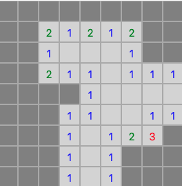
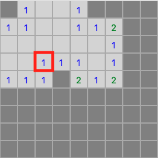
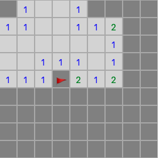
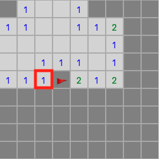
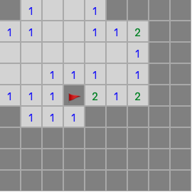
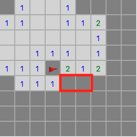
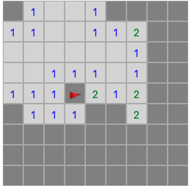
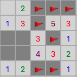

How to Play Minesweeper
Minesweeper is a game of logical deduction, where you have a grid with an unknown number of hidden mines that you must avoid while revealing all other squares. The entire board starts unrevealed, and you can reveal a square by clicking it (or tapping on mobile).
The first square you click will never be a mine, nor will the squares next to it. Squares that aren't next to any mines will show as blank and then automatically reveal anything adjacent to them to save you some obvious clicking. Squares that are next to at least one mine will show how many they are next to. After your first click you'll end up with something looking like this:
Based on this revealed information you should be able to start making deductions about where some mines are. For example, the square highlighted in this image:
We know that square is adjacent to one mine, and that all the squares ajdacent to it except one have been revealed as non-mines. Therefore, we know that last unrevealed square is a mine and can flag it by right clicking it (or a held down tap on mobile).
The flag stops us from clicking the square again unless we remove the flag by right clicking it again.
We can also leverage these flags while revealing squares through another method: clicking a square that is already revealed. For example, now that the flag is in place we know everything next to the square below the one we used earlier is safe
So if we left click that square it will reveal all of them
Be careful with this method, it assumes your flags are correctly placed on a mine. If they aren't you'll likely lose when you try it
Once you're comfortable with single square deductions you can start making deductions based on information from multiple squares. For example, we can see that the 2 in this picture is already next to one flagged mine, and has two adjacent unrevealed squares
Since the square directly to the right of that 2 it is only adjacent to 1 mine, and that square is also adjacent to the two squares highlighted above that must contain a mine based, any other squares the 1 is next to must be safe.
Take your time working out multi-square deductions, the more you play the more you'll start to recognize common configurations
Sometimes in Minesweeper you will hit dead ends where there is no way to know for sure where the next mine is.
When this happens take your best guess. If you hit a mine, just reset and try again. If you'd like a version of minesweeper that rules out dead-ends like this, try Simon Tatham's version here: Mines (or hopefully some day a setting on this game if I can ever figure out how to build it).